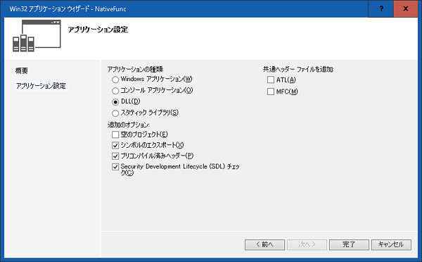
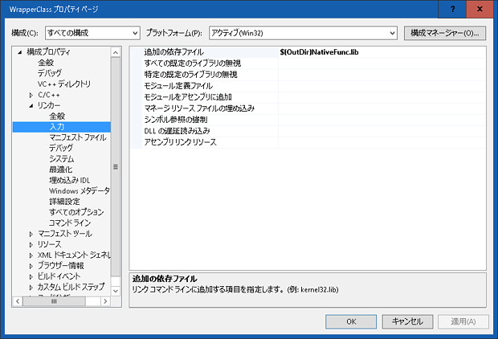
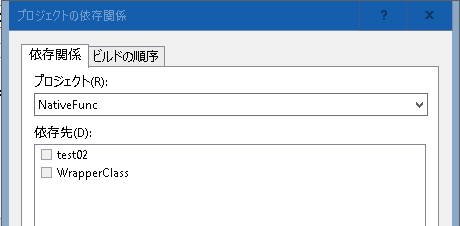
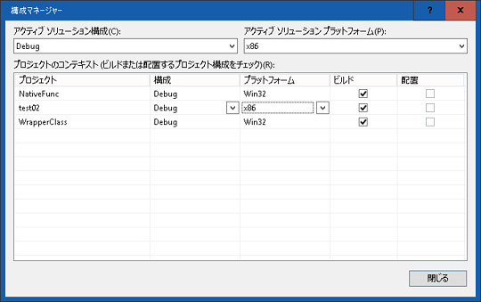
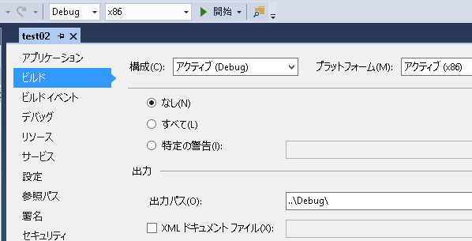
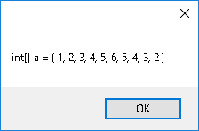
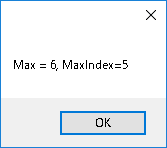

C++の関数は例として、「配列の最大値を検索し、インデックスと最大値を返す」というものを作成してみます。
基本の手順は（02）C#から、C++の関数の実行（簡単な例）と変わりませんが、C++プロジェクトも作成するので少し複雑になります。
下の手順で作成されたソリューションは、ここにあります（サンプルプログラムにおける警告について）。





#ifdef NATIVEFUNC_EXPORTS
#define NATIVEFUNC_API __declspec(dllexport)
#else
#define NATIVEFUNC_API __declspec(dllimport)
#endif
namespace Native
{
// num個のint配列srcから、最大値とそのインデックスを探す関数です
NATIVEFUNC_API void Max(int* src, int num, int* mx, int* mxIndex);
}#include "stdafx.h"
#include "NativeFunc.h"
NATIVEFUNC_API void Native::Max(int* src, int num, int* mx, int* mxIndex)
{
*mx = src[0];
*mxIndex = 0;
for (int i = 0; i < num; i++)
{
if (src[i] > *mx)
{
*mxIndex = i;
*mx = src[i];
}
}
}#pragma once
using namespace System;
namespace Wrapper {
public ref class WrapperClass
{
public:
void Max(array<int>^ src, int num, int% mx, int% mxIndex);
};
}#include "stdafx.h"
#include "WrapperClass.h"
#include "..\NativeFunc\NativeFunc.h"
void Wrapper::WrapperClass::Max(array<int>^ src, int num, int% mx, int% mxIndex)
{
// ★ここがポイント
// 実行中、ガベージコレクションされないように、pin_ptrを使って固定する
pin_ptr<int> psrc = &src[0];
pin_ptr<int> pmx = &mx;
pin_ptr<int> pMxIndex = &mxIndex;
// 自作関数実行
Native::Max(psrc, num, pmx, pMxIndex);
// ★ここがポイント
// 固定解除
psrc = nullptr;
pmx = nullptr;
pMxIndex = nullptr;
}array<int>^を、pin_ptrで固定して、Native::Max）にポインタを渡していますusing System;
using System.ComponentModel;
using System.Data;
using System.Drawing;
using System.Linq;
using System.Text;
using System.Windows.Forms;
using Wrapper;
namespace test02
{
public partial class Form1 : Form
{
WrapperClass _wr = new WrapperClass(); //WrapperClassのインスタンスを作成
public Form1()
{
InitializeComponent();
int[] a = { 1, 2, 3, 4, 5, 6, 5, 4, 3, 2 };
int mx = 0;
int mxIndex = 0;
int num = 10;
MessageBox.Show("int[] a = { 1, 2, 3, 4, 5, 6, 5, 4, 3, 2 }");
_wr.Max(a, num, ref mx, ref mxIndex); //処理実行
MessageBox.Show("Max = " + mx.ToString() + ", MaxIndex=" + mxIndex.ToString());
Environment.Exit(0);
}
}
}int[] a = { 1, 2, 3, 4, 5, 6, 5, 4, 3, 2 }
から最大値と最大値のインデックスを取得し表示します。
実行ファイルは、.\Debugと.\Releaseにあります。
処理前、

処理後、
